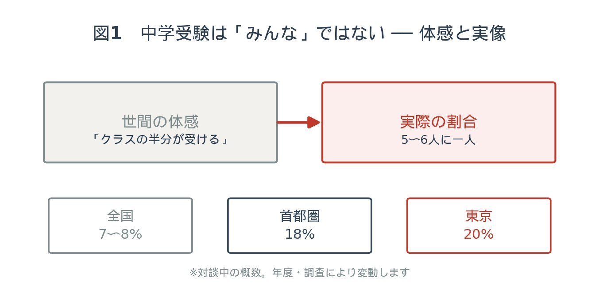
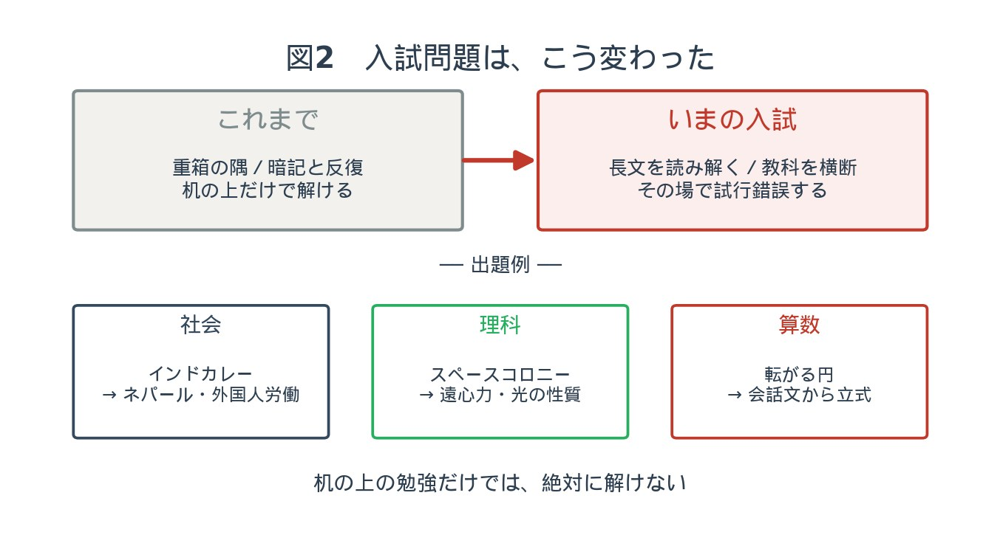
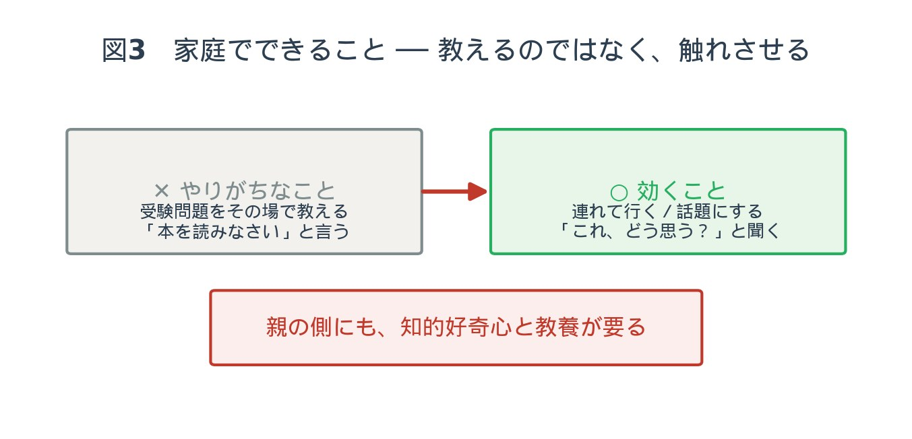

第一部 ── 「みんな受けてる」は、本当か
管野今日は「中学受験」についてお話ししたいと思います。いま、たいへん多くの方が中学受験をする時代になっていますので、中学受験の指導をされている塾から、ベテランのお二人の先生にお越しいただきました。お二人とも、塾でのご経験は30年ほどですね。── ざっくりで結構です。六年生のどのくらいの割合が中学受験をしている実感ですか。
池村よく「みんなやってるよ」と聞くんですけれども、実際は多くても5〜6人に一人ぐらいじゃないかなと思います。
管野そんなものですか。クラスの半分ぐらいが受ける、という話をよく聞きますけど。
池村そう聞きますよね。お母様方も「周りの子はみんなやっているので」とおっしゃる。でも実際に調べてみると、そこまでではない。
宮崎皆さん、結構隠すんですよね。受験することをお互いに言わなかったり。だから子どもたちに聞いても、友達が受験するかどうか、あまり分からない。落ちたら恥ずかしい、ということなのかもしれません。ただ、実際に調べてみると、首都圏でだいたい18%ぐらいの子が私立中学に進学しています1。全国で言うと、7〜8%ぐらいじゃないですかね。
池村一番多いのは東京ですね。東京全体で20%ぐらい。23区になるともっと多くなります。
管野私の感想では、思ったより少ないなと。

§1 ── 私立を選ぶ理由が、変わってきた
管野では、私立中を受験する子は、どういう理由で受けるのでしょうか。公立に行くという選択肢もあるわけですが。
宮崎結構、多様化しているんですよね。昔は本当に成績のいいお子さんが私立を受験することが多かったんですけれども、最近はいろいろな理由で「公立に進学しない方がいい」と判断して、私立中を受験する。たとえば、めちゃめちゃ個性的な子っているじゃないですか、昔から。そういう子が公立中に進むと、なかなか先生から理解されなくて、内申点に響いてしまったりする。内申点や提出物にエネルギーを注ぐよりは、私立中に行ってのびのびと6年間過ごした方が、子どもの個性にとってはいいんじゃないか、という考えですね。
管野それは親御さんの意見ですね。池村先生、どうですか。
池村そういう意見も多いですし、そこまで考えていない場合もあります。「なんとなく私立の方が手厚い教育が受けられる」とか。あと最近よく聞くのは、「子どもがやりたいと言うから」ですね。
§2 ── 「子どもが行きたいと言うから」を、疑ってみる
管野そこに、私は少し疑問があるんです。「親としてはどちらでもいいんだけれど、子どもが行きたいと言うから受けさせるんです」という。でも、小学生が自分の意思で情報を集めて比較して「私立の方がいい」と思うとは、ちょっと思えなくて。いろいろな情報を入れて、それとなく吹き込んで、そちらに誘導しているんじゃないかと思うんですが。
池村確かに、そういうケースを感じたことはあります。ただ個人的に気になっているのは、ちゃんと子どもさんが「行きたい」と言っている場合でも、その学校が、その子の個性やパーソナリティに合った教育をしているのか。真逆じゃないか、ということもある。親として見極めないまま、子どもの意見を表面的に尊重してしまっているケースもあるかな、と。
管野私立中学校には、その学校の教育理念がありますよね。それに合致しているかどうかは、すごく大事だと思うんです。親御さんはどの程度、学校を調べているんでしょうか。
宮崎最近は私立中もオープンスクールや体験授業を非常にたくさんやっているので、よく見に行っています。ただ、中学一年生から通うので、通える範囲が結局は決まってしまうんですよね。ドア・トゥ・ドアで1時間、乗り換えは1回ぐらいが理想だと言われます。本当に家庭の方針にぴったり合う学校が、その範囲の中で見つかっているかというと、少し怪しいところは実際にあります。
管野私は以前『中学受験は子どもをダメにする』という本を書いたことがあって2、弊害を感じるところがあるんですけれども ──「私立の方が手厚い教育をする」というのは、本当にそうなんですか。私は幻想じゃないかと思っているんですが。
池村説明会に足を運んだりするような学校さんは、結構頑張ってらっしゃるなという印象ではあります。「こういう子に来てほしい」というのが伝わる学校が多くなってきている気はします。全部が全部というわけではないと思いますが。
§3 ── 小四から、詰め込む必要はあるのか
管野今は小四ぐらいから受験勉強をしないと、なかなか受からないという話も聞きます。幼い時から受験勉強ばかりやらせることの功罪について、宮崎先生はどうお考えですか。
宮崎私が言うのもなんなんですけど、小四からそんなに勉強しなくてもいいんじゃないかな、と正直思っています。中学受験のテキストって、小五からしっかりやれば、受験の内容はほぼ網羅できるようになっているんです。実際のところ、四年生ぐらいまでは好き放題遊んでいてもらった方がいいんじゃないかな、という気がしています。
管野遊んだ方がいい、というのはどういうことですか。
宮崎入試問題が変わってきていて、机の上で対策問題集をせこせこやっていれば解ける入試問題ではなくなってきているんです。ちょっと面白い問題で言うと、今年9月の下旬に五連休がありますよね。あれを祝日法の話として出して、「これに基づいて考えたとき、2026年9月は何連休になるかカレンダーに丸をしなさい」3という問題が出てきたりする。普段から世の中のことに触れていた方が答えやすい問題が増えているかな、と。
管野私も30〜40年前に中学受験の子を教えたことがあるんですけれども、当時は重箱の隅をつつくような問題ばかりで。受験勉強ばかりしているので、受験勉強が「勉強」だと思い込んでしまう。だから、高校生・大学生になって知的好奇心が強まってきたときに、勉強するエネルギーがもう枯れてしまっている ── そういう子を、私個人の体験としてはたくさん見てきたんですね。
池村私たちはむしろ六年生になっても、それまで続けてきた習い事をちゃんとやりながら進めた方が理想だと思って、そうしています。ガリガリと特訓でやるやり方だと、興味・関心の芽を摘んでしまう可能性がやっぱりありますよね。本来、小学生のうちにいろいろなものに触れてほしいので。
第二部 ── 入試問題は、こう変わった
池村一番最初に「変わってきたな」と分かりやすかったのが、公立の中高一貫校です。地元で言えば千葉県立東葛飾中学校4は、文系の検査と理系の検査という二つしか試験がなくて、どちらも資料や会話文から読み解いていくような問題なんです。普段からいろいろな現象や社会の仕組みにアンテナを張っていないとダメで、机上の勉強だけでは絶対に解けない。最近は私立の学校でも、そういう傾向を取り入れる学校が増えてきています。
§4 ── 社会：インドカレーから、世界へ
管野お持ちいただいた問題があります。「インドカレー」と書いてありますね。海城中学校5の入試問題です。
宮崎社会は暗記教科と言われがちなんですけれども、最近多いのは、一つのテーマについて書かれた長い文章を読んでいくものです。これはインドカレーについての文章で、そこから地理・歴史・公民に結びつけていく。「インドカレー屋さんは、ネパールの方が経営していることが多い」というところから、ネパールという国に焦点を当てたり、外国から働きに来る人たちの話につなげたり。なぜ人は外国で働くのか、というところを考えさせたりします。
管野学校側は、生徒のどんな力を見ようとしているんですかね。
宮崎一つは、習ってきたものをちゃんとつなげて考えることができるかどうか。地理・歴史・公民ってバラバラに学びがちなので、そのつながりが分かっているかどうか。もう一つは、与えられた題材から自分なりに考えられるかどうか。記述問題も入っているので、単なる暗記では解けないわけですね。やっぱり、「面白い」と思いながら入試問題を解ける子が欲しいんだろうな、という感じがします。
§5 ── 理科・算数：スペースコロニーと、転がる円
池村理科の方はいっぱいあります。芝浦工業大学柏中学校6の理科の問題では、スペースコロニーが出てきます。『機動戦士ガンダム』で有名ですよね。宇宙で人類が暮らすには重力が必要だから、筒状の都市を回転させて、遠心力を擬似的な重力にしている ── というところから入るんです。さらに、昼も夜も必要だから、巨大な鏡で太陽の光を反射させて取り入れる。そこで、理科で習った光の性質と、算数の角度の計算を絡めてくる。非常にいい問題ですね。
池村算数でも、定番の問題にひと捻り入れてくれている。円が転がって中心がどう動くか、という問題はどんな問題集にもある定番なんですけれども、それが「見たことないぞ」という形で ── 一旦、溝にはまって復活するときに車輪がどう動くか、というような。自分で手を動かして、書いてみないと一筋縄ではいかない。定番すぎると、ろくに書きもせずに答えられてしまいますから。その場で試行錯誤できるかを、うまく測ってくれています。
管野昔とは違ってきている、と。どんな要素が必要だということでしょうね。
池村教養も必要ですし、身近なものに興味を持っているかがとても大事になってきています。あとは、文章を正確に読むことが、教科に関係なく必要になってきている。算数でも、会話文で「何々君はこういう計算をしました」「それは面白い考え方ね」とやり取りがあって、「あなたはこの考え方をもとにして、自分の考えを計算式とともに説明しなさい」という問題があったりします。
宮崎状況や条件をその場で読み取って、理解して解いているか。その力は、結構問われますね。

第三部 ── 家庭で、できること
管野かなり高度な力が要求されますね。親としては、家庭でどんなことをしていればいいんですか。
池村受験勉強の問題をその場で教えてあげるよりは、様々なものに触れさせて話題にしてあげたり、連れて行ってあげたりする ── そういうアシストの方が助かりますね。
宮崎「これ、どう思う？」と、一つのテーマについて親子でちょっと話してみたりとか。そういうのが必要かなと思いますね。
管野親の方にも、知的好奇心や教養的な知識が必要だということですね。── 私はやはり、中学受験は後で伸びなくなるんじゃないかという懸念があります。次回は、中学に入ってから伸びているのかどうか、大学受験や社会に出てから本当に力を発揮できるのか、議論してみたいと思います。

ご家庭で試してみてください
この鼎談を「読んで終わり」にしないために、今日から試せる小さな三つを置いておきます。受験をする・しないにかかわらず、どのご家庭でもできることです。
1. 「みんな受けてる」を、一度疑ってみる。
焦りの元になっている「みんな」は、誰のことでしょうか。実際の数字と、わが子の顔を並べて、落ち着いて考えてみてください。
2. ニュースをひとつ、食卓に持ち込む。
「これ、どう思う？」と聞いてみる。正解を教える必要はありません。地理や歴史につながったら、それは立派な入試対策です。
3. 週末、どこかへ連れて行く。
博物館でも、工場見学でも、いつもと違う駅でも構いません。親が面白がっている姿が、何よりの教材になります。